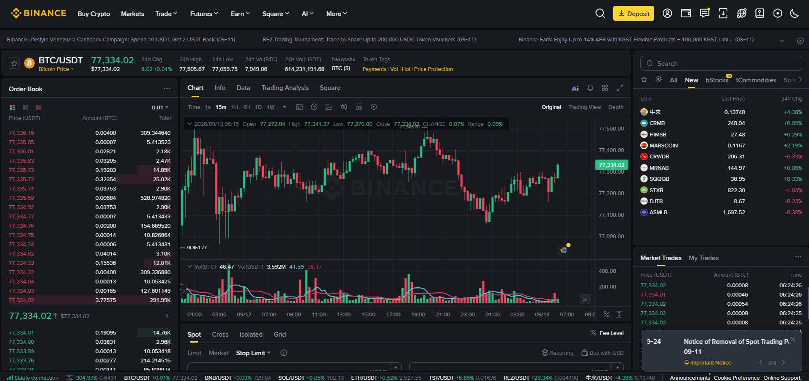
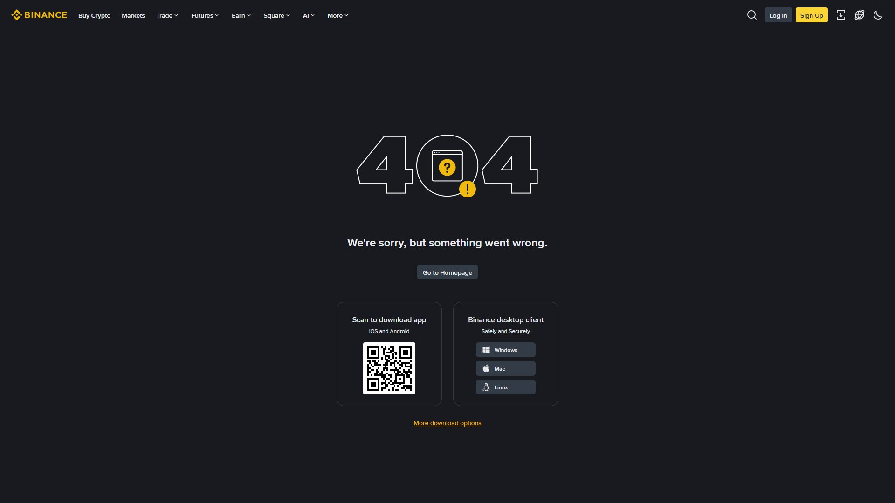
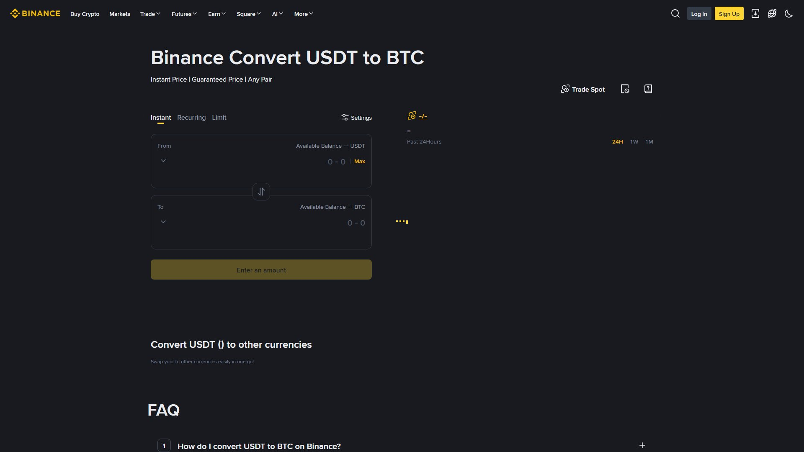
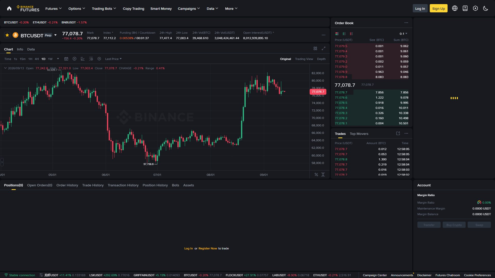
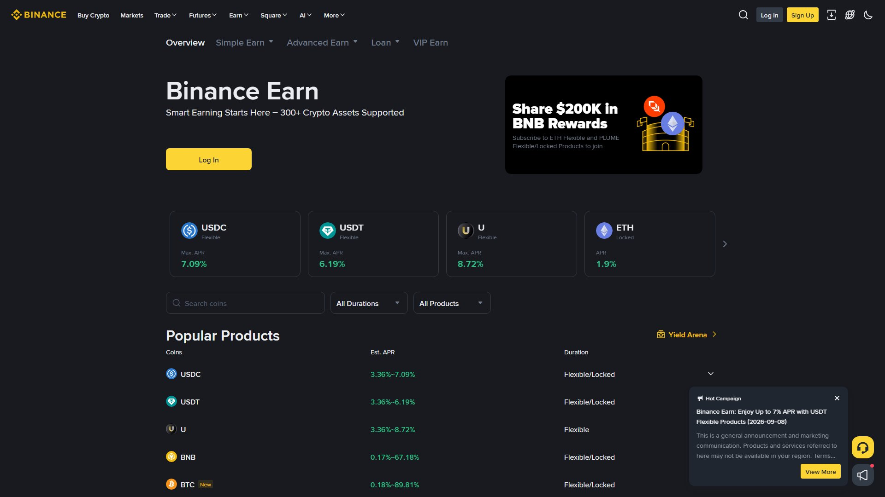
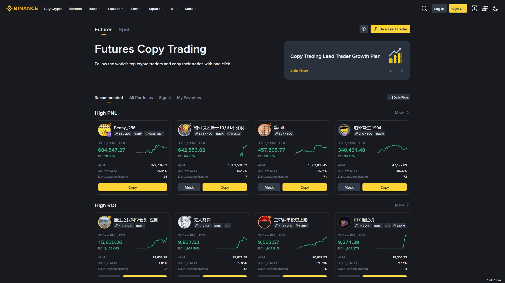

بائننس میں دس سے زیادہ طریقوں سے ٹریڈ کیا جا سکتا ہے — اور ہر طریقہ ایک الگ ماحول، ایک الگ رسک اور ایک الگ مقصد رکھتا ہے۔ یہ باب آپ کو بتائے گا کہ کب، کیا اور کون سا موڈ استعمال کرنا چاہیے — اور سب سے اہم: کون سا موڈ آپ کے لیے بالکل نہیں ہے۔
بائننس ہوم پیج کے اوپر والی نیویگیشن بار میں "Trade" پر کلک کریں۔ ڈراپ ڈاؤن کچھ یوں کھلتا ہے:
Trade ▾
├── Convert (آسان سواپ)
├── Spot (بنیادی خرید/فروخت)
├── Margin (ادھار پر ٹریڈنگ)
├── Futures (USDM / COINM فیوچرز)
├── P2P (پیئر ٹو پیئر)
├── Copy Trading (ماہرین کی نقل)
├── Trading Bots (خودکار بوٹس)
└── Strategy Trading (آٹومیشن حکمت عملیاں)💡 یاد رکھیں: یہ سب الگ الگ ماحول (Environments) ہیں — یہ ایک ہی ٹریڈنگ اسکرین نہیں ہیں۔ ہر موڈ کے پیچھے الگ سسٹم، الگ فیس، اور الگ رسک ہے۔
✅ Convert → فوری تبدیلی، کوئی لیوریج نہیں
✅ Spot → بنیادی خرید/فروخت، کوئی قرض نہیں
⚠️ P2P → محفوظ (ایسکرو)، مگر انسانوں سے معاملہ
⚠️ Earn → کم رسک، مگر قید (Locked) ہو سکتی ہے
⚠️ Margin → قرض + لیوریج
⛔ Futures → لیوریج 125x تک، لیکویڈیشن
⛔ Copy Trading → آپ کا پیسہ، کسی اور کا فیصلہ
⛔ Trading Bots → خودکار، مگر نقصان بھی خودکارSpot = خرید اور فروخت براہ راست۔ جو قیمت آپ دیکھتے ہیں، وہی ادا کرتے ہیں۔ نہ قرض، نہ لیوریج — آپ اثاثہ (Asset) حقیقی طور پر اپنے نام کرتے ہیں۔

آپ BTC/USDT دیکھتے ہیں — فرضی قیمت $96,000
آپ 0.01 BTC خریدتے ہیں = $960 ادا کیا
اب آپ کے وولیٹ میں حقیقی 0.01 BTC ہے
جب فروخت کریں گے — اُس وقت کی قیمت ملے گی| صورتحال | Spot موزوں؟ |
|---|---|
| پہلی بار کرپٹو خریدنا | ✅ جی ہاں |
| طویل مدت کے لیے کرپٹو رکھنا | ✅ جی ہاں |
| لیوریج نہیں چاہتے | ✅ جی ہاں |
| سست لیکن محفوظ ترقی | ✅ جی ہاں |
| بڑا لیوریج | ❌ نہیں — Futures استعمال کریں |
| مارکیٹ گر رہی ہو پر منافع چاہیے | ❌ نہیں — Short کے لیے Futures |
| سطح | Maker | Taker |
|---|---|---|
| Regular (VIP 0) | 0.1000% | 0.1000% |
| BNB سے فیس ادا | 25% رعایت | 25% رعایت |
| VIP اعلیٰ درجات | کم ہوتی جاتی ہے | کم ہوتی جاتی ہے |
💡 Maker/Taker فرق سمجھیں:
- Maker = وہ آرڈر جو آرڈر بک میں رُک جائے (آپ لیکویڈیٹی فراہم کرتے ہیں)
- Taker = وہ آرڈر جو فوراً موجود آرڈر سے میچ ہو جائے (آپ لیکویڈیٹی لیتے ہیں)
- Limit آرڈر = Maker (عموماً)، Market آرڈر = Taker (ہمیشہ)
💰 پیسہ بچانے کا راز: اگر آپ Limit آرڈر استعمال کریں اور BNB سے فیس ادا کریں، تو آپ کی فیس 0.075% تک گر سکتی ہے — سال میں کئی سو ڈالر کی بچت۔
| آرڈر | کیا کرتا ہے | کب استعمال |
|---|---|---|
| Market | فوری، موجودہ قیمت پر خرید/فروخت | جلدی ٹریڈ |
| Limit | مقرر قیمت پر آرڈر | درست قیمت چاہتے ہیں |
| Stop-Limit | قیمت کی سطح فعال ہو، پھر Limit | رسک کنٹرول |
| OCO | ایک وقت میں Take-Profit + Stop-Loss | بہترین ٹریڈ مینجمنٹ |
| Trailing Stop | قیمت کے ساتھ خودکار طور پر ایڈجسٹ | منافع محفوظ رکھنا |
📖 آرڈر کی اقسام کی مکمل تفصیلی گائیڈ: باب 13
P2P (Peer-to-Peer) = آپ براہ راست کسی بیچنے والے/خریدار سے لین دین کرتے ہیں، اور بائننس صرف ایسکرو (Escrow) — یعنی ضامن — کا کردار ادا کرتا ہے۔ یہ پاکستان میں PKR سے کرپٹو خریدنے کا سب سے عام طریقہ ہے۔

آپ: "مجھے 100 USDT چاہیے، بینک ٹرانسفر سے"
P2P: "ایک مرچنٹ مل گیا — PKR 28,000 کے بدلے"
آپ: PKR 28,000 مرچنٹ کے بینک اکاؤنٹ میں منتقل کریں
بائننس: ✅ ادائیگی کی تصدیق → 100 USDT آپ کے وولیٹ میں چھوڑ دیے| صورتحال | P2P موزوں؟ |
|---|---|
| پاکستان میں PKR سے USDT خریدنا | ✅ جی ہاں |
| بینک / ایزی پیسہ / جاز کیش کے ذریعے | ✅ جی ہاں |
| بروکر کے بغیر خریداری | ✅ جی ہاں |
| چھوٹی سے درمیانی رقم | ✅ جی ہاں |
| اعلیٰ فریکوئنسی ٹریڈنگ | ❌ نہیں — Spot استعمال کریں |
📖 P2P کی مکمل تفصیلی گائیڈ: باب 12
Convert بائننس کا سب سے سادہ ٹول ہے — ایک کوائن کو دوسرے میں بدلیں، کوئی چارٹ نہیں، کوئی آرڈر بک نہیں، کوئی ترتیب (Queue) نہیں۔

From: 100 USDT
To: BTC
Rate: 1 BTC = $96,000
You Get: ~0.00104 BTC
Fee: واضح فیس نہیں (اسپریڈ میں پوشیدہ)| خصوصیت | وضاحت |
|---|---|
| آسان | صرف 2 انتخاب اور 1 کلک |
| فوری | سیکنڈوں میں تبدیلی |
| کوئی چارٹ نہیں | مبتدی کے لیے بہترین |
| متعدد جوڑے | BTC→USDT→BNB وغیرہ |
| 0 فیس | مگر اسپریڈ میں خاموش قیمت |
💡 اسپریڈ (Spread) کیا ہے؟ وہ چھوٹا سا فرق ہے جو بائننس خرید اور فروخت کی قیمت کے درمیان رکھتا ہے۔ Convert میں یہ پوشیدہ ہوتا ہے — کوئی واضح فیس نہیں دکھتی، مگر آپ کو مارکیٹ سے تھوڑا خراب ریٹ ملتا ہے۔
📖 Convert کی مکمل تفصیلی گائیڈ: باب 11
Margin = بائننس سے قرض لے کر آپ کی پوزیشن کا سائز بڑھانا۔ یہ Spot سے خطرناک ہے کیونکہ نقصان بھی بڑھ جاتا ہے — اور اگر حد سے بڑھے تو لیکویڈیشن (پوزیشن کی خودکار بندش) ہو سکتی ہے۔
آپ کے پاس: $1,000
آپ ادھار لیتے ہیں: $4,000 (4x لیوریج)
کل پوزیشن: $5,000
اگر قیمت 5% اوپر → منافع $250 (پہلے $50 تھا)
اگر قیمت 5% نیچے → نقصان $250 (پورے کیپٹل کا 25%!)
اگر قیمت 20% نیچے → ❌ لیکویڈیشن — پورا $1,000 گیا| قسم | وضاحت | رسک |
|---|---|---|
| Cross Margin | پورے میرجن اکاؤنٹ کا بیلنس ضمانت | زیادہ — پورا اکاؤنٹ متاثر |
| Isolated Margin | صرف اس ایک پوزیشن کا مختص بیلنس | کم — نقصان اسی پوزیشن تک |
📖 Margin کی مکمل تفصیلی گائیڈ: باب 14
Futures = آپ اثاثہ (Asset) خود نہیں خریدتے، بلکہ ایک کانٹریکٹ خریدتے ہیں جو آئندہ قیمت کی حرکت پر منافع/نقصان دیتا ہے — لیوریج کے ساتھ۔

| پہلو | USD-M (USDT Margined) | COIN-M (Coin Margined) |
|---|---|---|
| ضمانت (Margin) | USDT یا USDC | بنیادی کوائن (BTC، ETH) |
| لیوریج | کچھ جوڑوں پر زیادہ | نسبتاً کم |
| منافع/نقصان | USDT میں | بنیادی کوائن میں |
| کس کے لیے | اکثر تاجر | جو اپنے کوائن سے ٹریڈ کرنا چاہیں |
| قسم | میعاد | مقصد |
|---|---|---|
| Perpetual | کوئی میعاد نہیں — ہمیشہ جاری | ڈے ٹریڈنگ، اسکیلپنگ |
| Delivery (Quarterly) | مقررہ تاریخ پر ختم | ہیجِنگ، طویل پوزیشن |
⚠️ Perpetual کی اہم حقیقت: ان کی کوئی میعاد (expiry) نہیں ہوتی — یہ کئی مہینوں یا سالوں تک کھلی رہ سکتی ہیں۔ یہ Futures مارکیٹ کی سب سے عام قسم ہے۔
ہر 8 گھنٹوں میں Long اور Short پوزیشنز ایک دوسرے کو فنڈنگ ریٹ ادا کرتے ہیں۔ یہ شرح فیوچرز کی قیمت کو اسپاٹ قیمت کے قریب رکھتی ہے۔ اگر ریٹ مثبت ہو، Long ادا کرتا ہے؛ منفی ہو تو Short ادا کرتا ہے۔
📖 Futures کی مکمل تفصیلی گائیڈ: باب 15، 16، 17
اپنے کرپٹو کو رکھیں اور روزانہ بنیادوں پر منافع حاصل کریں — بغیر خرید/فروخت کیے۔ بالکل بینک کے سود کی طرح، مگر اکثر زیادہ شرح۔

| قسم | وضاحت | رسک |
|---|---|---|
| Flexible | جب چاہیں نکالیں | بہت کم |
| Locked | مقررہ مدت (30/60/90 دن) | کم |
| Auto-Invest | خودکار سرمایہ کاری (DCA) | مارکیٹ رسک |
| Staking | PoS نیٹ ورک پر اسٹیک | کم سے درمیانہ |
⚠️ اہم: Earn کی شرحیں (APR/APY) فی الوقت ہیں اور ہر روز بدلتی رہتی ہیں۔ کتاب میں لکھی کوئی شرح مستقل نہیں — بائننس کے صفحے پر تازہ دیکھیں۔
📖 Earn کی مکمل تفصیلی گائیڈ: باب 38-40
Launchpad نئے پروجیکٹ کے ٹوکنز ابتدائی قیمت پر حاصل کرنے کا موقع دیتا ہے۔

💡 یاد رکھیں: Launchpool میں آپ خرید نہیں کرتے — آپ فارم کرتے ہیں۔ یہ ایک اہم فرق ہے۔
📖 Launchpad/Launchpool کی مکمل تفصیلی گائیڈ: باب 37، 57
NFT (Non-Fungible Token) = منفرد ڈیجیٹل اثاثہ جس کی ایک ہی کاپی ہوتی ہے — تصاویر، آرٹ، جمع کرنے والی اشیاء وغیرہ۔

📖 NFT کی مکمل تفصیلی گائیڈ: باب 58
تجربہ کار ٹریڈرز کی حکمت عملی کو خودکار طور پر نقل کریں۔ فنڈز آپ کے اکاؤنٹ میں رہتے ہیں، مگر ٹریڈ ان کے فیصلوں کی بنیاد پر ہوتی ہے۔

| بوٹ | کیا کرتا ہے | باب |
|---|---|---|
| Grid Bot | سائیڈ مارکیٹ میں قیمت کے اتار چڑھاؤ سے منافع | 34 |
| DCA Bot | اوسط لاگت کی حکمت عملی | 35 |
| Rebalancing Bot | پورٹ فولیو کا تناسب برقرار رکھنا | 34 |
| Spot-Futures Arbitrage | اسپاٹ اور فیوچرز کے فرق سے فائدہ | 34 |
⚠️ بوٹس "منافع کی گارنٹی" نہیں دیتے — یہ صرف خودکار اوزار ہیں۔ خراب مارکیٹ میں نقصان ہو سکتا ہے۔
📖 Copy Trading: باب 36 | Trading Bots: باب 34
| موڈ | بنیادی مقصد | رسک کی سطح | فیس | منافع کی نوعیت |
|---|---|---|---|---|
| Spot | براہ راست خرید/فروخت | کم | 0.1% | مارکیٹ کی حرکت |
| P2P | فیاٹ سے کرپٹو | درمیانہ (دھوکہ دہی سے بچیں) | 0 (مرچنٹ پر) | خریداری کا راستہ |
| Convert | فوری سواپ | بہت کم | 0 (اسپریڈ) | تبدیلی |
| Margin | ادھار کے ساتھ ٹریڈ | اونچا | + سود | لیوریجڈ منافع |
| Futures | لیوریج، Long/Short | بہت اونچا | 0.02-0.04% | دوہری طرفہ منافع |
| Earn | غیر فعال منافع | کم | 0 | سود/انعام |
| Launchpad/Pool | نئی لسٹنگ | اونچا | 0 | نئے ٹوکنز |
| NFT | ڈیجیٹل کلیکٹیبل | متغیر | ~1% | مجموعے کی قدر |
| Copy Trading | خودکار کاپی | متغیر | پروفٹ شیئر | ٹریڈر کی مہارت |
| Trading Bots | خودکار ٹریڈنگ | متغیر | ٹریڈ فیس | حکمت عملی |
📈 مبتدی کے لیے ترتیب: Spot → Convert → Simple Earn → P2P → پھر Futures/Margin (اگر ضرورت ہو)۔
💡 پیسہ بچانے کا راز: Limit آرڈر + BNB سے فیس = 25% رعایت + Maker ریٹ۔
دس موڈز، دس مختلف ماحول۔ جیسے گاڑی، رکشہ اور کشتی چلانے کے اصول الگ ہوتے ہیں، ویسے ہی بائننس کے ہر موڈ کا اپنا اصول اور اپنا رسک ہے۔ Spot کو پہلے مکمل سیکھیں، پھر باقی سب۔ سیکھنے کی ترتیب ہی سب سے اہم تحفظ ہے۔
اور یہ کہ کوئی بھی موڈ "منافع کی مشین" نہیں ہے — ہر موڈ ایک ٹول ہے۔ ٹول کا نتیجہ آپ کی سمجھ پر منحصر ہے، ٹول کی شہرت پر نہیں۔